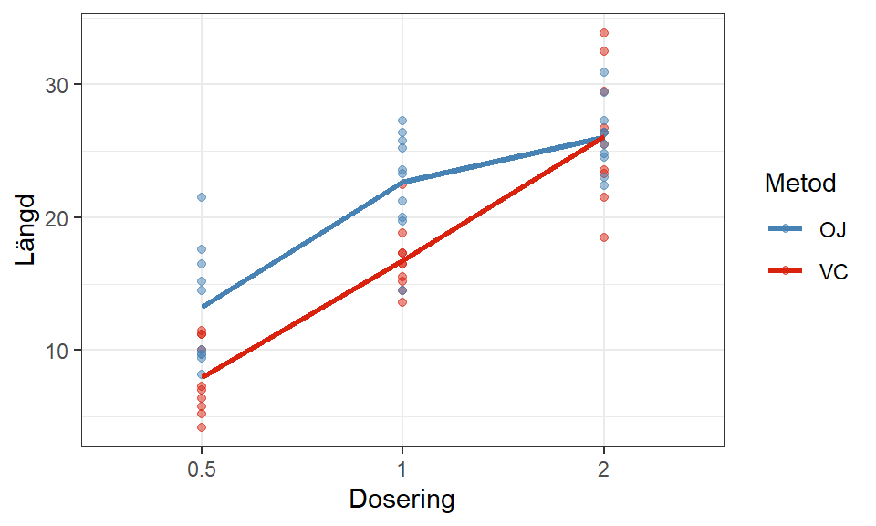

I Kapitel 13 studerade vi förhållandet mellan en responsvariabel och en förklarande faktor (med flera faktornivåer) och Kapitel 15 utökade vi modellen till att också inkludera kontrollvariabler för att justera effekten av faktorn och ta hänsyn till confounding effekter.
Ett experiment behöver inte begränsa sig till endast en faktor av intresse utan kan utökas till flera förklarande faktorer. I detta kapitel utvidgar vi modellen till två förklarande faktorer och vi vill studera förhållandet mellan varje faktor och en kombination av dessa gentemot responsvariabeln.
När vi undersöker flera faktorer kan vi kombinera fixa och slumpmässiga faktorer i olika konstellationer och skillnaden mellan dessa modeller påverkar både den teoretiska grunden och hur vi genomför inferens på dess olika delar.
16.1 Typer av kvadratsummor
I envägs-ANOVA kan vi undersöka faktorns effekt med ett F-test där kvadratsumman för faktorn är den enda komponenten i den förklarade variationen. Med en modell som nu inkluderar flera faktorer kommer den förklarade variationen bestå av flera komponenter, en för vardera faktor och en för interaktionen mellan dem, på samma sätt som i en multipel linjär regressionsmodell.
I Avsnitt 5.1.1 beskrev vi sekventiella kvadratsummor (SS) som ett sätt att dela upp den förklarade variationen i dess mindre beståndsdelar. Sekventiella kvadratsummor är endast en variant av kvadratsumma som vi kan använda för att presentera den förklarade variationen.
Typ I SS kallas oftast för sekventiella eller betingade kvadratsummor eftersom de beräknas enligt den ordning som variablerna läggs till i modellen. I en tvåvägs-ANOVA med interaktioner har modellen tre källor av variation. Notera att kategoriska variabler grupperas till en och samma källa oavsett hur många kodade variabler eller tillhörande parameterskattningar som den innehåller. Givet att vi skattar modellen lm(Y ~ A * B) där \(A\) och \(B\) är två faktorer beräknas SS av typ I som följer:
Faktor A: \(SS(A)\)
Faktor B: \(SS(B | A)\)
Interaktion: \(SS(AB | A, B)\)
Om vi vill undersöka faktor As huvudsakliga effekter kommer dessa SS endast ta hänsyn till Faktor A, alltså vi får samma värden som om vi hade anpassat en envägs-ANOVA med enbart faktor A. Detta är inte målet med en tvåvägs-ANOVA, vi vill ta hänsyn till båda faktorerna som modellen innehåller.
Typ II SS beräknar kvadratsummor betingat på andra variabler av samma grad eller lägre. I praktiken betyder detta att huvudeffekterna är av grad 1 medan interaktionen är av grad 2 och betingade kvadratsummor för en huvudeffekt kommer endast ta hänsyn till den andra huvudeffekten.
Faktor A: \(SS(A | B)\)
Faktor B: \(SS(B | A)\)
Interaktion: \(SS(AB | A, B)\)
Denna kvadratsumma kommer undersöka de huvudsakliga effekterna under antagandet att det inte finns någon interaktion med i modellen, vilket i R beräkningsmässigt skulle motsvara en lm(Y ~ A + B) modell med typ III SS. Typ II SS ger oss dock möjligheten att få ut dessa värden utan att behöva skatta om modellen ifall interaktionseffekten visat sig vara icke-signifikant.
Typ III SS beräknar kvadratsummor betingat på alla andra variabler som inkluderas i modellen oavsett ordningen vi lägger in dem.
Faktor A: \(SS(A | B, AB)\)
Faktor B: \(SS(B | A, AB)\)
Interaktion: \(SS(AB | A, B)\)
Jämfört med typ II SS beräknas de betingade kvadratsummorna för huvudeffekterna med interaktionen i åtanke vilket innebär att dessa kvadratsummor för huvudeffekterna kommer vara korrekt ifall interaktionen är signifikant.
Viktigt
För typ III SS när interaktionen är inkluderad måste vi koda våra faktorer enligt effektkodning. Orsaken bakom detta är att för flervägs-ANOVA med interaktioner kräver att summan av kodningen för varje variabel är 0, annars undersöks fel hypoteser.
Typ II och typ III SS har inte samma additiva egenskap som typ I SS vilket innebär att den totala förklarade variationen inte kan beräknas genom deras summa, utan vi behöver då beräkna \(SSR = SSY - SSE\).
En balanserad ANOVA-modell ger dock ett specialfall av dessa kvadratsummor, nämligen att de alla är lika varandra. Vad detta betyder för vår inferens är att vi kan undersöka den enskilda faktorns effekt direkt från ANOVA-tabellen oavsett vilken sorts kvadratsumma som används.
16.2 Tvåvägs-ANOVA
Anta att vi genomför ett experiment för att mäta effekten av C-vitamin på tillväxten av tänder hos marsvin. De två faktorerna som undersöks är doseringen av vitamin (faktor A) och intagningsmetoden (faktor B).
Tre specifika doser undersöks:
0.5 mg/dag
1 mg/dag
2 mg/dag
Två olika sätt att ge C-vitamin till marsvinen undersöks:
Apelsinjuice (kodad OJ)
Askorbinsyra (kodad VC)
Modellen måste nu ta hänsyn till att vi har två index för faktorerna (\(i\) och \(j\)) och ett index för observationerna (\(k\)).
När vi lägger till ytterligare en faktor och interaktionen mellan de två innebär det att vi undersöker tre olika potentiella effekter; interaktionseffekter, och två huvudsakliga faktoreffekter, en för respektive faktor. Däremot kommer interaktionseffektens förekomst eller avsaknad påverka hur vi undersöker de huvudsakliga effekterna.
Vi kan visualisera en tvåvägs-ANOVA likt vi gjort tidigare, genom grupperade diagram, men vi måste också ta hänsyn till att interaktionen mellan de två faktorerna kan vara av intresse. Därför behöver vi gruppera diagrammet på båda faktorerna.
Visa kod
ToothGrowth <- ToothGrowth %>%mutate(dose =factor(dose) )contrasts(ToothGrowth$dose) <-contr.sum(3)contrasts(ToothGrowth$supp) <-contr.sum(2)ggplot(ToothGrowth) +aes(x = dose, y = len, fill = supp) +geom_violin() +theme_bw() +scale_fill_manual("Metod",values =c("steelblue", "#d9230f") ) +labs(x ="Dosering", y ="Längd")
Fördelning av längder för respektive kombination av dos och intagningssätt.
Med detta fioldiagram kan vi se skillnader i faktormedelvärden, fördelningen för respektive färg, men för att tydligt kunna utläsa interaktioner behöver vi göra ett interaktionsdiagram. Ett interaktionsdiagram är ett linjediagram över cellmedelvärdena, alltså medelvärden för varje kombination av nivåer från respektive faktor.
Visa kod
# Beräknar cellmedelvärdenmeans <- ToothGrowth %>%group_by(supp, dose) %>%summarize(mean =mean(len) )# Visar respektive cellmedelvärdeggplot(ToothGrowth) +aes(x = dose, y = len, group = supp, color = supp) +geom_point(alpha =0.5) +theme_bw() +scale_color_manual("Metod", values =c("steelblue", "#d9230f")) +geom_line(data = means,aes(y = mean), linewidth =1.2 ) +labs(x ="Dosering", y ="Längd")

Figur 16.1: Interaktionsdiagram över cellmedelvärden.
Vi kan identifiera en antydan till en interaktion genom icke-parallella linjer som i praktiken betyder att effekten av en faktor påverkas av vilken nivå av den andra faktorn som också ges. I just detta fall ser linjerna ut att korsas vid dos 2 vilket ger en svag antydan till att en interaktion förekommer. Som alla former av visualiseringar beskriver detta endast det urval som har genomförts och för att dra slutsatser om populationen behöver vi genomföra inferens.
16.2.1 Modellanpassning i R
Att skatta en tvåvägs-ANOVA i R är inte svårare än att skatta en regressionsmodell med flera variabler. För att få en interaktion mellan de två faktorerna behöver vi använda * istället för +.
Visa kod
model <-lm(len ~ supp*dose, data = ToothGrowth)anova(model) %>%kable(digits =3, caption ="Modellens ANOVA-tabell.")
Modellens ANOVA-tabell.
Df
Sum Sq
Mean Sq
F value
Pr(>F)
supp
1
205.350
205.350
15.572
0.000
dose
2
2426.434
1213.217
92.000
0.000
supp:dose
2
108.319
54.160
4.107
0.022
Residuals
54
712.106
13.187
Tips
För att visa att de sekventiella kvadratsummorna som R anger är lika de andra typerna av kvadratsumma kan vi ändra ordning på modellen och ändå få samma kvadratsummor för alla komponenter.
Visa kod
model <-lm(len ~ dose*supp, data = ToothGrowth)anova(model) %>%kable(digits =3, caption ="Modellens ANOVA-tabell.")
Modellens ANOVA-tabell.
Df
Sum Sq
Mean Sq
F value
Pr(>F)
dose
2
2426.434
1213.217
92.000
0.000
supp
1
205.350
205.350
15.572
0.000
dose:supp
2
108.319
54.160
4.107
0.022
Residuals
54
712.106
13.187
16.2.2 Inferens
Utifrån tabellen kan vi dra slutsatser om respektive komponent i modellen men vi börjar alltid med interaktionseffekter.
Hypoteserna som undersöks för respektive del kan grupperas i flera partiella F-test utifrån Ekvation 16.1. Interaktionen består i detta exempel av parametrarna \(\beta_4\) och \(\beta_5\) så den formella hypotesen för interaktionseffekten är: \[
\begin{aligned}
&H_0: \beta_4 = \beta_5 = 0\\
&H_a: \text{Minst en av } \beta \text{ i } H_0 \ne 0
\end{aligned}
\]
Testvariabeln beräknas genom: \[
\begin{aligned}
F_{test} = \frac{MSAB}{MSE}
\end{aligned}
\] där \(MSAB\) är interaktionens medelkvadratsumma. Testvariabeln anses följa \(F_{(A-1)(B-1), A \cdot B(n-1), 1-\alpha}\).
P-värdet för testet (0.0219) är mindre än fem procent vilket innebär att vi kan förkasta \(H_0\) att det inte finns någon interaktion mellan faktorerna.
Detta kommer påverka våra nästa steg i analysen eftersom en interaktion innebär att sambandet mellan en faktor och mätvariabeln förändras beroende på den andra faktorn. Den direkta konsekvensen är att de huvudsakliga faktoreffekterna inte längre är relevant att undersöka eftersom de kommer ge missvisande resultat. Vi kommer inte vilja undersöka skillnader mellan specifika faktornivåer utan fokuserar på cellmedelvärdena, alltså skillnader i medelvärden när vi tar hänsyn till båda faktorerna.
Paketet emmeans kan skapa cellmedelvärden genom:
Visa kod
means <-emmeans(model, specs =~supp*dose)means %>%kable(digits =3, caption ="Cellernas medelvärden", col.names =c("Metod", "Dosering", "Medelvärde", "Medelfel", "Frihetsgrader", "Nedre KI gräns", "Övre KI gräns"))
Tabell 16.1: Cellernas medelvärden
Metod
Dosering
Medelvärde
Medelfel
Frihetsgrader
Nedre KI gräns
Övre KI gräns
OJ
0.5
13.23
1.148
54
10.928
15.532
VC
0.5
7.98
1.148
54
5.678
10.282
OJ
1
22.70
1.148
54
20.398
25.002
VC
1
16.77
1.148
54
14.468
19.072
OJ
2
26.06
1.148
54
23.758
28.362
VC
2
26.14
1.148
54
23.838
28.442
Tabell 16.1 visar de specifika värden som vi såg i Figur 16.1. Inferens över multipla jämförelser innebär nu att vi skapar par av cellmedelvärden och genomför hypotesprövningar eller intervallskattningar med någon form av familjekonfidens. Formellt undersöks par av medelvärden med båda index, t.ex. \(H_0: \mu_{11} - \mu_{12} = 0\).
Visa kod
tukey <-pairs(means, adjust ="tukey") tukey %>%as_tibble() %>%arrange(abs(estimate) %>%desc()) %>%kable(digits =3, caption ="Parvisa jämförelser av cellmedelvärden med Tukey familjekonfidens")selectedMeans <- means[c(1:4),]bonferroni <-pairs(selectedMeans, adjust ="bonferroni")bonferroni %>%as_tibble() %>%arrange(abs(estimate) |>desc()) %>%kable(digits =3, caption ="Parvisa jämförelser av utvalda cellmedelvärden med Bonferroni familjekonfidens")
Tabell 16.2: Parvisa jämförelser av utvalda cellmedelvärden med Bonferroni familjekonfidens
contrast
estimate
SE
df
t.ratio
p.value
VC dose0.5 - VC dose2
-18.16
1.624
54
-11.182
0.000
VC dose0.5 - OJ dose2
-18.08
1.624
54
-11.133
0.000
VC dose0.5 - OJ dose1
-14.72
1.624
54
-9.064
0.000
OJ dose0.5 - VC dose2
-12.91
1.624
54
-7.949
0.000
OJ dose0.5 - OJ dose2
-12.83
1.624
54
-7.900
0.000
OJ dose0.5 - OJ dose1
-9.47
1.624
54
-5.831
0.000
VC dose1 - VC dose2
-9.37
1.624
54
-5.770
0.000
VC dose1 - OJ dose2
-9.29
1.624
54
-5.720
0.000
VC dose0.5 - VC dose1
-8.79
1.624
54
-5.413
0.000
OJ dose1 - VC dose1
5.93
1.624
54
3.651
0.007
OJ dose0.5 - VC dose0.5
5.25
1.624
54
3.233
0.024
OJ dose0.5 - VC dose1
-3.54
1.624
54
-2.180
0.264
OJ dose1 - VC dose2
-3.44
1.624
54
-2.118
0.294
OJ dose1 - OJ dose2
-3.36
1.624
54
-2.069
0.319
OJ dose2 - VC dose2
-0.08
1.624
54
-0.049
1.000
contrast
estimate
SE
df
t.ratio
p.value
VC dose0.5 - OJ dose1
-14.72
1.624
54
-9.064
0.000
OJ dose0.5 - OJ dose1
-9.47
1.624
54
-5.831
0.000
VC dose0.5 - VC dose1
-8.79
1.624
54
-5.413
0.000
OJ dose1 - VC dose1
5.93
1.624
54
3.651
0.004
OJ dose0.5 - VC dose0.5
5.25
1.624
54
3.233
0.013
OJ dose0.5 - VC dose1
-3.54
1.624
54
-2.180
0.202
16.3 Slumpmässiga faktorer
Hittintills har vi bara ägnat oss åt modeller där vi endast har fixa effekter. I praktiken har vi många situationer där nivåerna på en faktor är dragna slumpmässigt från en population vilket innebär att inferensen som vi genomför tittar på hela population och inte bara de utvalda nivåerna. Detta är en modell med slumpmässiga effekter och i en flervägs-modell kan vi inkludera en blandning av fixa och slumpmässiga effekter (mixed effects model) eller enbart slumpmässiga (random effects model). I fallet med två slumpmässiga faktorer kan vi utveckla Ekvation 14.1 till att ta hänsyn till flera slumpmässiga effekter: \[
\begin{aligned}
Y_{ijk} = \gamma_{000} + U_{0i0} + U_{00j} + U_{0ij} + E_{ijk}
\end{aligned}
\tag{16.2}\] där
\(i\) är de uppmätta nivåerna av faktor A,
\(j\) är nivåer av faktor B,
\(\gamma_{000}\) är det övergripande medelvärdet (motsvarande \(\mu\) i Ekvation 13.1),
\(U_{0i0} \sim N(0, \sigma_A^2)\) är den avvikelse som nivå \(i\) har på det övergripande medelvärdet,
\(U_{00j} \sim N(0, \sigma_B^2)\) är den avvikelse nivå \(j\) har på medelvärdet,
\(U_{0ij} \sim N(0, \sigma_{AB}^2)\) är den avvikelse respektive kombination av nivåer från de två faktorerna har på medelvärdet,
till sist \(E_{ijk} \sim N(0, \sigma^2)\).
Modellen innehåller nu fyra olika varianser, \(\sigma^2_A\), \(\sigma^2_B\), \(\sigma^2_{AB}\) och \(\sigma^2\) som tillsammans bildar den totala variansen av \(Y\).
16.3.1 Inferens
Vi beräknar kvadratsummor på samma sätt som i fallet med en tvåvägs-ANOVA med två fixa faktorer. Däremot ser väntevärdena för kvadratsummorna annorlunda ut och påverkar hur testvariabeln beräknas för respektive faktor.
På samma sätt som i Kapitel 14 kommer inferens inte längre fokusera på de enskilda lutningsparametrarna utan istället undersöka variansen av respektive komponent. Till exempel ett test för signifikanta interaktionseffekter undersöker \(H_0: \sigma^2_{AB} = 0\) mot \(H_a: \sigma_{AB}^2 > 0\).
Testvariabeln utgår från följande väntevärden av medelkvadratsummor: \[
\begin{aligned}
E[MSE] &= \sigma^2 \\
E[MSAB] &= \sigma^2 + n_{ij} \sigma^2_{AB} \\
E[MSA] &= \sigma^2 + n_{ij} \sigma^2_{AB} + B \cdot n_{ij} \sigma^2_A\\
E[MSB] &= \sigma^2 + n_{ij} \sigma^2_{AB} + A \cdot n_{ij} \sigma^2_B
\end{aligned}
\] där \(n_{ij}\) är antalet i respektive cell vilket i en balanserad modell är samma värde för alla celler, \(n_{ij} = \frac{n}{A\cdot B}\).
Viktigt
För en obalanserad modell är dessa väntevärden mycket mer komplicerade eftersom varje cell ger en viktad effekt på variansen givet sin storlek.
Testvariablerna kan nu skapas genom att ställa upp en kvot av två medelkvadratsummor som är lika om \(H_0\) är sann och större än 1 om \(H_a\) är sann. För interaktionen innebär det:
Testvariabeln följer F-fördelningen med täljarens och nämnarens frihetsgrader.
Det som är speciellt med slumpmässiga faktorer är hur vi undersöker de huvudsakliga faktoreffekterna för faktor A och B. Hypoteser för dessa komponenter fokuserar enbart på \(\sigma^2_A\) eller \(\sigma_B^2\) respektive och då räcker det inte att jämföra MSA med MSE som vi gör i en fix modell.
\[
\begin{aligned}
F_{test} = \frac{MSA}{MSE} = \frac{\sigma^2 + n_{ij} \sigma^2_{AB} + B \cdot n_{ij} \sigma^2_A}{\sigma^2}
\end{aligned}
\] Med den “vanliga” testvariabeln skulle vi inte kunna särskilja om variansen från faktor A eller interaktionen leder till att \(H_0\) förkastas. Istället behöver vi jämföra med MSAB i nämnaren:
När vi använder R för att anpassa modellen och skapa ANOVA-tabeller kan vi inte läsa av tabellens F-test direkt då R inte vet om att vi har slumpmässiga faktorer.
16.3.2 Exempel
En biolog vill undersöka om kackerlackor växer snabbare i varma och fuktiga miljöer. 27 identiska kackerlackor delas upp på nio olika kombinationer av temperatur och luftfuktighet. Det är inte just dessa temperaturer och luftfuktigheter som är av intresse, dessa olika kombinationer har blivit slumpmässigt valda av alla möjliga kombinatoner av luftfuktigheter och temperaturer. Kackerlackorna får vara i de olika förhållandena i två veckor, och efter dessa två veckor observeras deras längdökning i millimeter. Datamaterialet finns tillgängligt här.
Modellen anpassas på samma sätt som tidigare men vi behöver hålla koll på vad för värden som vi sedan tolkar.
Tips
Man kan i lm ange hur vi vill att kvalitativa variabler ska kodas istället för att spara kodningen i datamaterialet. Vi kan i argumentet contrasts ange en namngiven lista med faktorer och vilken form av contr.X som ska användas.
För effektkodning anger vi contr.sum.
Visa kod
model <-lm( length_increase ~ humidity * temperature,data = roach,# Faktoreffektkodar faktorerna enbart för modellanpassningencontrasts =list(humidity ="contr.sum",temperature ="contr.sum" ) )anova(model) %>%kable(digits =3, caption ="Modellens felaktiga ANOVA-tabell.")
Modellens felaktiga ANOVA-tabell.
Df
Sum Sq
Mean Sq
F value
Pr(>F)
humidity
2
1304.667
652.333
244.625
0.000
temperature
2
356.222
178.111
66.792
0.000
humidity:temperature
4
11.111
2.778
1.042
0.413
Residuals
18
48.000
2.667
Tabellen visar endast ett korrekt test, det för interaktionseffekten, och vi behöver själv beräkna det korrekta testet för de huvudsakliga faktorerna
# Skapar en korrigerad ANOVA-tabell utifrån en skattad tvåvägs-ANOVAmodell med två slumpmässiga faktorermainEffectCorrection <-function(model){ anovaTabell <-anova(model)# Testvariabel för faktor A (MSA / MSAB) anovaTabell[1,4] <- anovaTabell[1,3] / anovaTabell[3,3]# Testvariabel för faktor B (MSB / MSAB) anovaTabell[2,4] <- anovaTabell[2,3] / anovaTabell[3,3]# Beräknar nya p-värden anovaTabell[1:2,5] <-pf(q = anovaTabell[1:2, 4], df1 = anovaTabell[1:2,1], df2 = anovaTabell[3,1], lower.tail =FALSE )return(anovaTabell)}mainEffectCorrection(model) %>%kable(digits =3, caption ="Modellens korrigerade ANOVA-tabell.")
Modellens korrigerade ANOVA-tabell.
Df
Sum Sq
Mean Sq
F value
Pr(>F)
humidity
2
1304.667
652.333
234.840
0.000
temperature
2
356.222
178.111
64.120
0.001
humidity:temperature
4
11.111
2.778
1.042
0.413
Residuals
18
48.000
2.667
Den korrigerade tabellen visar att interaktionen inte har någon signifikant effekt (p-värde = 0.413) medan de två huvudsakliga faktorerna har båda en signifikant effekt på mätvariabeln (p-värde < 0.001 och 0.001 respektive).
Med slumpmässiga faktorer är vi inte intresserade av att undersöka faktornivåerna vidare med multipla jämförelser eftersom de endast är ett slumpmässigt urval av alla nivåer vi vill dra slutsatser om. Däremot kan det vara av intresse att undersöka respektive varians ytterligare.
16.3.3 Varianskomponenter
En tvåvägs-ANOVA med interaktion består av fyra stycken olika varianser där den totala variansen av Y, \(\sigma^2_Y\) delas upp i dess mindre beståndsdelar. \[
\begin{aligned}
Y &\sim N(\mu_{Y|\mathbf{X}}, \sigma^2_Y)\\
Y &\sim N(\mu_{Y|\mathbf{X}}, \sigma^2_A + \sigma^2_B + \sigma^2_{AB} + \sigma^2)
\end{aligned}
\] Vi nu intresserade av att skatta varianserna för respektive komponent, istället för multipla jämförelser, för att få en indikation på hur stor del av den totala variansen (och hur stora skillnader vi kan förvänta oss bland valda nivåer av en faktor). Återigen används väntevärden för medelkvadratsummorna som grund för våra omskrivningar till skattningarna av variansen.
Visa kod
# Sparar ner ANOVA-tabellenanovaTabell <-anova(model)# Plockar ut MSx från tabellenMSA <- anovaTabell$`Mean Sq`[1]MSB <- anovaTabell$`Mean Sq`[2]MSAB <- anovaTabell$`Mean Sq`[3]MSE <- anovaTabell$`Mean Sq`[4]# Sparar antalet nivåer för varje faktorA <- anovaTabell$Df[1] +1B <- anovaTabell$Df[2] +1# Sparar antalet observationer per cell n <- (sum(anovaTabell$Df) +1) / (A * B)# Beräknar variansskattningarnasigmaEst <- MSEsigmaAEst <- (MSA - MSAB) / (B*n)sigmaBEst <- (MSB - MSAB) / (A*n)sigmaABEst <- (MSAB - MSE) / n# Sammanställer skattningarna och presenterar som en tabelltibble(Parameter =c("$\\sigma^2_A$","$\\sigma^2_B$","$\\sigma^2_{AB}$", "$\\sigma^2$"),Skattning =c(sigmaAEst,sigmaBEst,sigmaABEst, sigmaEst) ) %>%kable(digits =3)
Parameter
Skattning
\(\sigma^2_A\)
72.173
\(\sigma^2_B\)
19.481
\(\sigma^2_{AB}\)
0.037
\(\sigma^2\)
2.667
Likt den korrigerade ANOVA-tabellen visar dessa varianser att interaktionen är den minsta effekten av alla modellens komponenter. De skattade varianserna visar på att humidity (Faktor A) verkar vara den största källan till variation jämfört med temperature men detta bör säkerställas med lämpliga intervallskattningar1.
16.3.3.1 Skatta varianser direkt i R
Att skatta varianserna för varje komponent som vi gjort tidigare är krångligt. Istället kan vi använda paketet lme4. Paketet är främst avsedd för mer komplicerade modeller men vi kan se våra ‘random effekt’-modeller som vi tittat på i denna övning som enkla tillämpningar.
Funktionen lmer skattar en linjär mix-effekt modell, där vi kan styra vilka komponenter vi anser vara fixa och vilka vi anser vara slumpmässiga. I de tidigare modellerna från detta kapitel är alla komponenter slumpmässiga och det blir då en ren slumpmässig modell. För att kunna lägga till slumpmässiga effekter i modellen behöver vi omformulera modellens formel något. En slumpmässig effekt skapas via (1 | faktor) istället för bara faktor. Tvåvägs-ANOVAmodellen skrivs då som följer:
Visa kod
model <-lmer( length_increase ~ (1| humidity) + (1| temperature) + (1| humidity:temperature), data = roach )
Detta modellobjekt har inte lika struktur som objekt från lm eller aov vilket innebär att vi behöver hantera resultatet på ett annorlunda sätt. Till exempel kommer summary() visa två olika grupper av utskrifter än vad vi är vana vid.
Visa kod
summary(model)
Linear mixed model fit by REML ['lmerMod']
Formula:
length_increase ~ (1 | humidity) + (1 | temperature) + (1 | humidity:temperature)
Data: roach
REML criterion at convergence: 122.1
Scaled residuals:
Min 1Q Median 3Q Max
-2.0519 -0.4454 -0.2116 0.4127 2.6173
Random effects:
Groups Name Variance Std.Dev.
humidity:temperature (Intercept) 0.03704 0.1925
temperature (Intercept) 19.48156 4.4138
humidity (Intercept) 72.17450 8.4956
Residual 2.66666 1.6330
Number of obs: 27, groups:
humidity:temperature, 9; temperature, 3; humidity, 3
Fixed effects:
Estimate Std. Error t value
(Intercept) 14.667 5.537 2.649
Utskriften delas upp i Random effects och Fixed effects med olika tabellstrukturer. Vår modell som anpassas är fortfarande Ekvation 16.2 där vi anser \(\gamma_{000}\) vara en fix effekt, ett fixt intercept, och de andra komponenterna vara slumpmässiga effekter. Eftersom vi inte är intresserade av exakta parameterskattningar för de slumpmässiga effekterna, de är ju bara ett slumpmässigt urval av nivåer från hela faktorn, visas inte dessa i utskriften till skillnad från det fixa interceptet (se Estimate). Istället fokuserar de slumpmässiga effekterna på variansen av varje komponent, det som vi också fokuserat på tidigare i kapitlet.
Vi kan plocka ut dessa varianser i en separat tabell genom:
Visa kod
summary(model) %>%# Tar ut varianskomponenterna .$varcor %>%# Konverterar till en data.frame för kableas.data.frame() %>%# Väljer ut relevanta delar av konverterade data.frame och byter namnselect( Källa = grp,Varians = vcov ) %>%kable(caption ="Skattade varianskomponenter", digits =3 )
Skattade varianskomponenter
Källa
Varians
humidity:temperature
0.037
temperature
19.482
humidity
72.175
Residual
2.667
Vi kan se att denna tabell ser likadan ut som den tabell som skapades utifrån beräkningar från medelkvadratsummorna. Det är endast några få skillnader i tusendelen vilket orsakas av hur funktionen skattar dessa varianser. Istället för att använda medelkvadratsummorna, som endast går att använda när modellen använder sig av kategoriska variabler, använder sig lmer av en variant av maximum likelihood för att optimera parametrarna. Detta medför att funktionen kan anpassa betydligt mer komplexa modeller än en random effekt ANOVA.
16.4 Obalanserad tvåvägs-ANOVA
Antagandet om att experimentet undersöker lika många observationer i varje kombination av behandlingar är kanske inte alltid så rimligt. ANOVA-modeller går att tillämpa även på observationsstudier där det i de allra flesta fallen inte går att kontrollera att undersökningen blir balanserad. Även i experimentella studier kan observationer som antas medverka försvinna av olika anledningar vilket resulterar i ett obalanserat experiment.
Konsekvensen av att analysera en obalanserad studie är att vi måste vara tydliga med vilken typ av SS som används då de inte kommer visa samma värden. Vanligast är att vi vill använda typ II eller III SS för att kunna genomföra lämplig inferens för de olika faktorerna.
Anta att vi i en studie gett samma koffeindos till 18 personer där två faktorer uppmättes, ifall kaffet blandades med mjölk och vilken form av socker (riktig, artificiellt, ingen) det innehöll, och hur mycket personen i fråga “babblade” efter att ha druckit kaffet. Enheten och vad denna mätvariabel faktiskt betyder är inte viktig men vi kan anta att högre värden kopplas till en mer pratglad person. Datamaterialet finns att laddas ner här (Navarro (2018)).
Visa kod
# Beräknar cellmedelvärdenmeans <- coffee %>%group_by(milk, sugar) %>%summarize(mean =mean(babble) )# Visar respektive cellmedelvärdeggplot(coffee) +aes(x = sugar, y = babble, group = milk, color = milk) +geom_point(alpha =0.5) +theme_bw() +scale_color_manual("Mjölk", values =c("steelblue", "#d9230f")) +geom_line(data = means,aes(y = mean), linewidth =1.2 ) +labs(x ="Socker", y ="Babblande")
Interaktionsdiagram av babblande uppdelat på två faktorer
I interaktionsdiagrammet ser vi antydan till en interaktion, men vi ser också att antalet observationer för varje kombination av nivåer inte är lika, studien är obalanserad. Vi har inte kunnat kontrollera att lika många tar mjölk till kaffet och använder sig av samma sorts socker.
Visa kod
model <-lm(babble ~ milk*sugar, data = coffee)anova(model) %>%kable(digits =3, caption ="Modellen ANOVA-tabell med typ I kvadratsummor.")
Modellen ANOVA-tabell med typ I kvadratsummor.
Df
Sum Sq
Mean Sq
F value
Pr(>F)
milk
1
1.444
1.444
5.479
0.037
sugar
2
3.070
1.535
5.824
0.017
milk:sugar
2
5.944
2.972
11.277
0.002
Residuals
12
3.162
0.264
Modellen anpassas på samma sätt som innan men ordningen av variablerna kommer nu påverka vad vi ser för värden på kvadratsummorna.
Visa kod
model2 <-lm(babble ~ sugar*milk, data = coffee)anova(model2) %>%kable(digits =3, caption ="Annan ordning på modellens ANOVA-tabell med typ I kvadratsummor.")
Annan ordning på modellens ANOVA-tabell med typ I kvadratsummor.
Df
Sum Sq
Mean Sq
F value
Pr(>F)
sugar
2
3.558
1.779
6.749
0.011
milk
1
0.956
0.956
3.628
0.081
sugar:milk
2
5.944
2.972
11.277
0.002
Residuals
12
3.162
0.264
Den enda av faktorernas kvadratsummor som blivit samma är interaktionen eftersom den beräknas på samma sätt med de två olika modellordningarna och denna typ av kvadratsumma. Detta blir lite rörigt att hålla koll på om vi ska undersöka både interaktionseffekter och huvudsakliga effekter så istället kan vi titta på typ III SS.
I paketet car får vi tillgång till funktionen Anova() (stort A) som ger oss möjligheten att ange vilken typ av SS som vi vill visa i ANOVA-tabellen.
Visa kod
Anova(model, type =3) %>%kable(digits =3, caption ="Modellen ANOVA-tabell med typ III kvadratsummor.")
Modellen ANOVA-tabell med typ III kvadratsummor.
Sum Sq
Df
F value
Pr(>F)
(Intercept)
86.490
1
328.183
0.000
milk
1.763
1
6.691
0.024
sugar
3.133
2
5.945
0.016
milk:sugar
5.944
2
11.277
0.002
Residuals
3.162
12
ANOVA-tabellen ser något annorlunda ut jämfört med vad vi är vana vid. Vi får en ny första rad (Intercept) som vi inte alls ska läsa av eller ta hänsyn till i vår analys, och vi saknar helt medelkvadratsummor. Dessa kan vi enkelt beräkna enligt \(\frac{SS}{df}\) men det som vi kanske främst är intresserade av är testvariabeln och det tillhörande p-värdet. Alla dessa tester undersöker hur mycket ytterligare variation faktorn eller interaktionen bidrar med givet de andra faktorerna och interaktion redan inkluderad i modellen.
16.4.1 Multipla jämförelser
Även för obalanserade modeller vill vi undersöka jämförelser mellan faktor- eller cellmedelvärden för att specifikt veta var skillnader råder.
Visa kod
means <-emmeans(model, specs =~milk*sugar)tukey <-pairs(means, adjust ="tukey") tukey %>%as_tibble() %>%arrange(abs(estimate) %>%desc()) %>%kable(digits =3, caption ="Parvisa jämförelser av cellmedelvärden med Tukey familjekonfidens")
Parvisa jämförelser av cellmedelvärden med Tukey familjekonfidens
contrast
estimate
SE
df
t.ratio
p.value
yes none - no real
-2.175
0.392
12
-5.547
0.001
yes fake - yes none
2.100
0.469
12
4.481
0.008
no none - yes none
1.850
0.469
12
3.948
0.019
yes none - yes real
-1.400
0.419
12
-3.340
0.052
no fake - no real
-1.225
0.363
12
-3.375
0.049
no fake - yes fake
-1.150
0.445
12
-2.587
0.174
no fake - yes none
0.950
0.392
12
2.423
0.222
no fake - no none
-0.900
0.445
12
-2.024
0.384
no real - yes real
0.775
0.392
12
1.977
0.407
yes fake - yes real
0.700
0.469
12
1.494
0.674
no fake - yes real
-0.450
0.392
12
-1.148
0.852
no none - yes real
0.450
0.469
12
0.960
0.922
no none - no real
-0.325
0.445
12
-0.731
0.974
yes fake - no none
0.250
0.513
12
0.487
0.996
yes fake - no real
-0.075
0.445
12
-0.169
1.000
Till skillnad från Tabell 16.2 ser vi att varje medelfel är olika på grund av att vi har olika antal observationer i varje cell. Argumentet adjust kan ändras till bonferroni eller scheffe beroende på vilken familjekonfidens vi vill beräkna. Liknande funktioner för kontraster som vi tidigare använt är också användbara här.
16.5 Övningsuppgifter
Anta en studie där forskare vill undersöka variationen i bränsleeffektivitet (mätt i miles per gallon) för olika bilar som körs av olika förare. De två faktorerna i denna studie är:
Förare: Fyra slumpmässigt utvalda förare (Faktor A)
Bilar: Fem slumpmässigt utvalda bilar av samma modell (Faktor B)
Varje förare kör varje bil två gånger på samma testbana. Datamaterialet finns att hämta här
Skriv upp modellen som anpassas och beskriv alla komponenter.
Testa om det finns interaktionseffekt med 5% siginifikans.
Testa på 5 procents signifikans om förare och/eller bil har en effekt på bränsleförbrukningen.
Skatta variansen för förare med ett 90% approximativt Satterthwaites konfidensintervall. Visa beräkningarna och tolka intervallet.
Referenser
Navarro, Danielle. 2018. Learning Statistics with R: A tutorial for psychology students and other beginners. Danielle Navarro. https://learningstatisticswithr.com/.